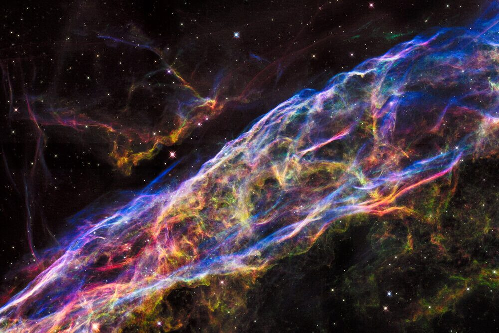
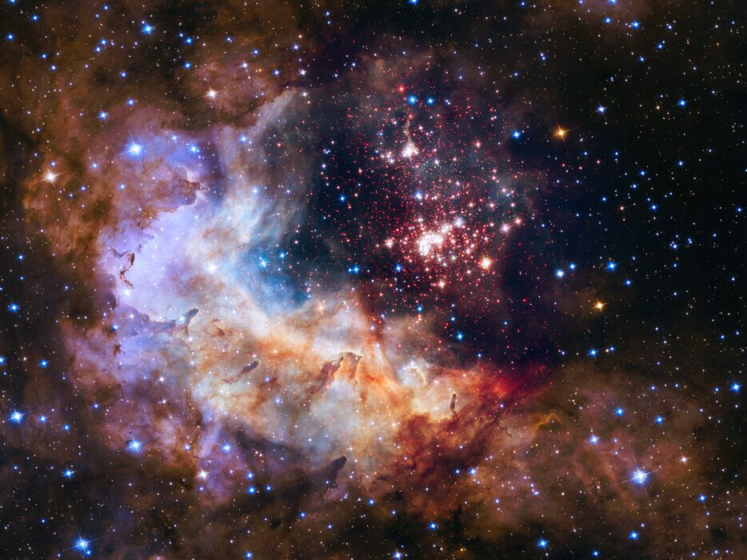
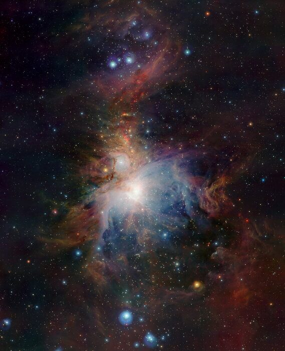
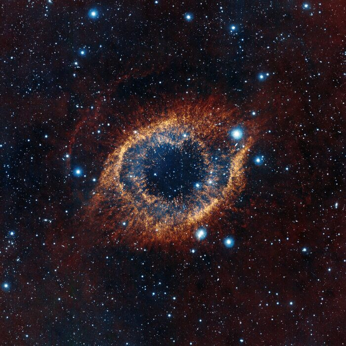
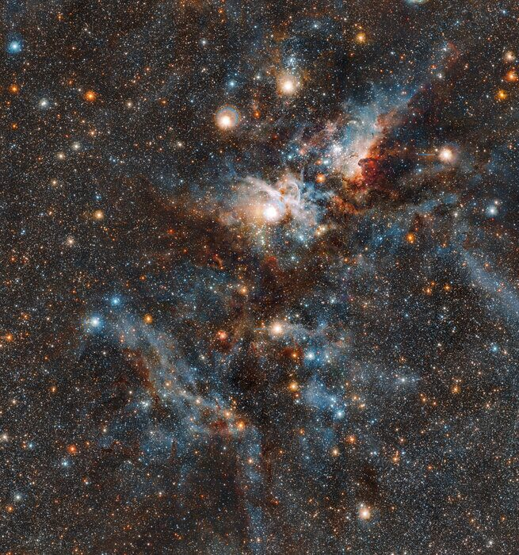

05 · Veil Teal Filaments10681 × 7121Credit: NASA, ESA, Hubble Heritage TeamSource · Open full resolution
06 · Westerlund Blue Cluster8919 × 6683Credit: NASA, ESA, the Hubble Heritage Team (STScI/AURA), A. Nota (ESA/STScI), and the Westerlund 2 Science TeamSource · Open full resolution
10 · Orion Infrared Stars12640 × 15546Credit: ESO/J. Emerson/VISTA. Acknowledgment: Cambridge Astronomical Survey UnitSource · Open full resolution
11 · Helix Blue Starfield6592 × 6592Credit: ESO/VISTA/J. Emerson. Acknowledgment: Cambridge Astronomical Survey UnitSource · Open full resolution
12 · Carina Infrared Stars11800 × 12608Credit: ESO/J. Emerson/M. Irwin/J. LewisSource · Open full resolution